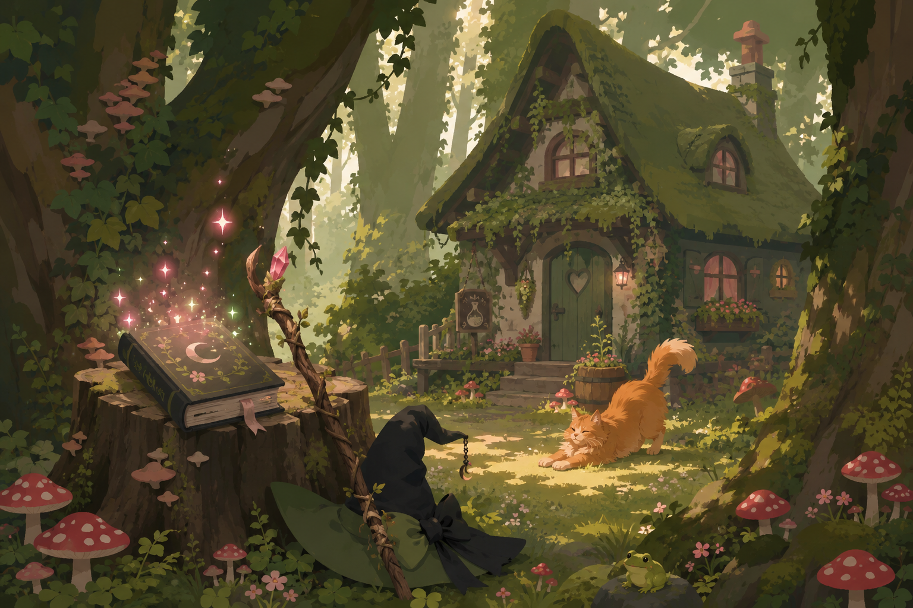

Ruru's Grimoire

A forest of spells, stories and projects
Ruru's Grimoire
Welcome to a cosy witchy corner filled with creative work, game-development notes and ideas growing beneath the canopy.

Open the grimoire
Choose a path through the forest. Each section has its own purpose while sharing the same mossy, magical atmosphere.